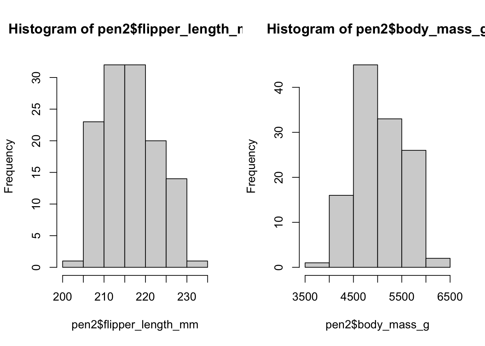
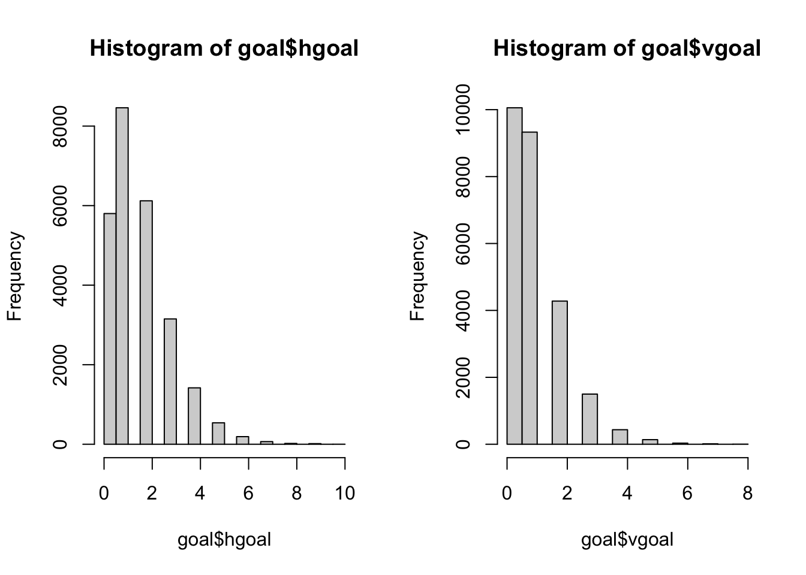
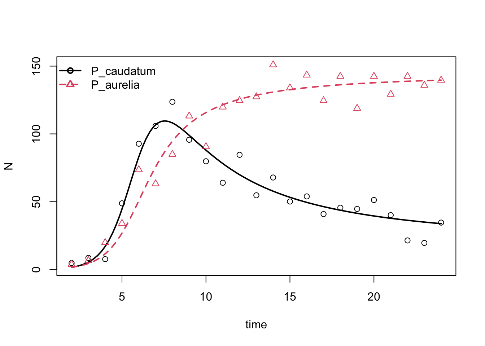
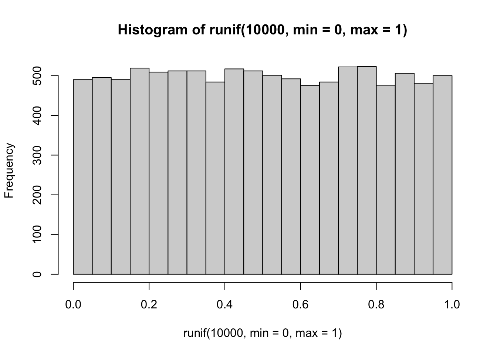
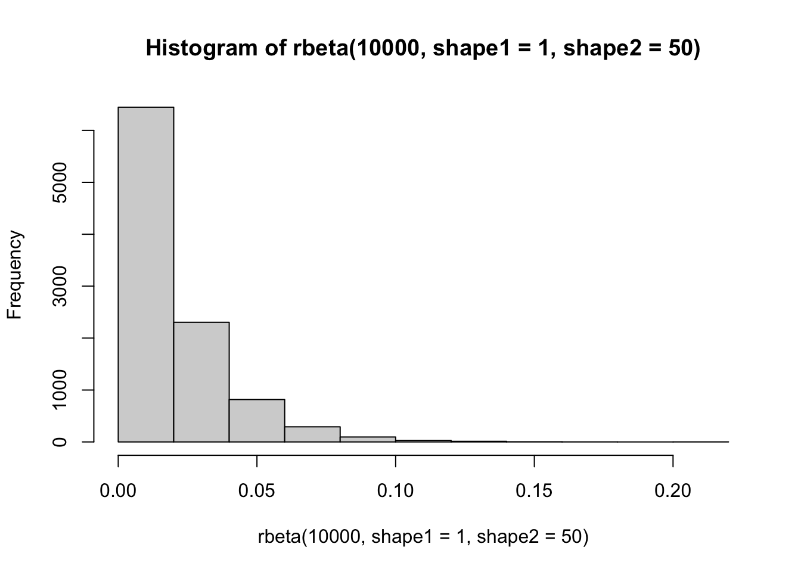
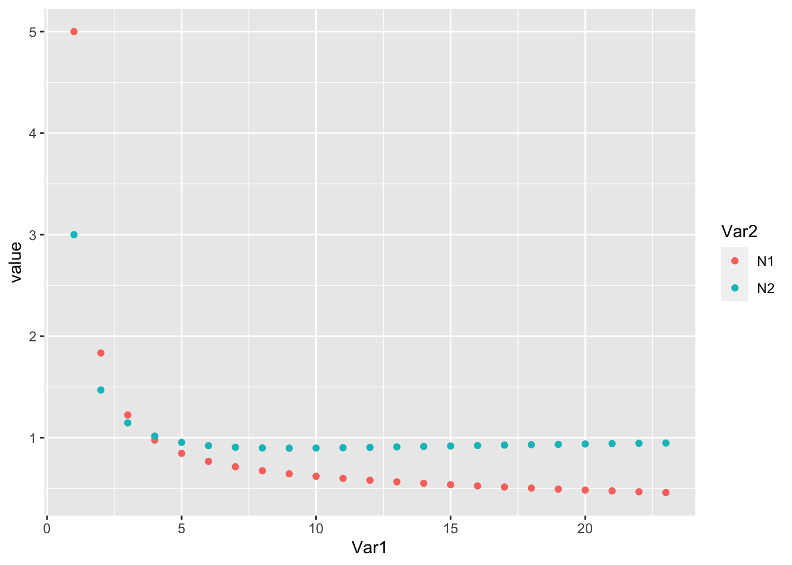
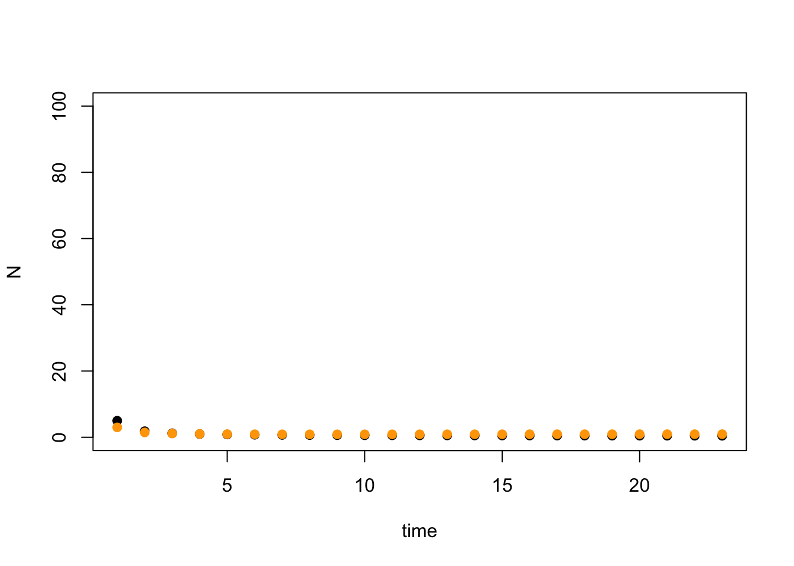
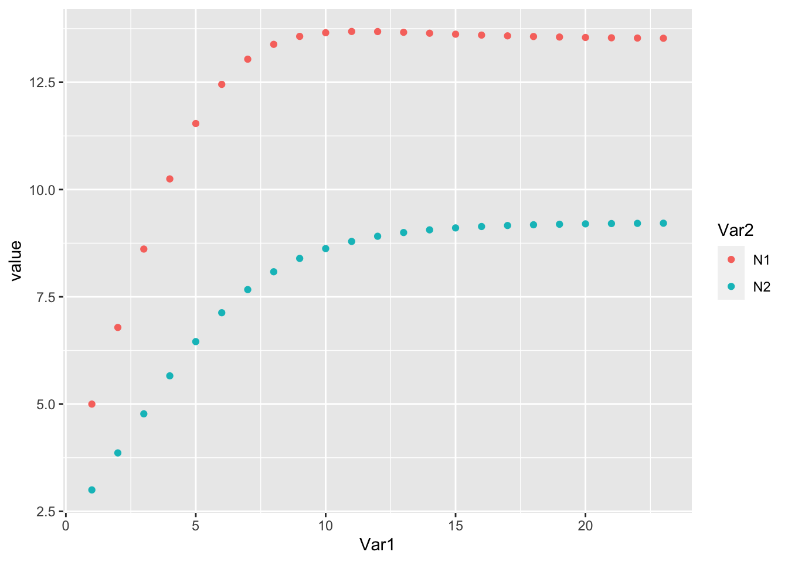
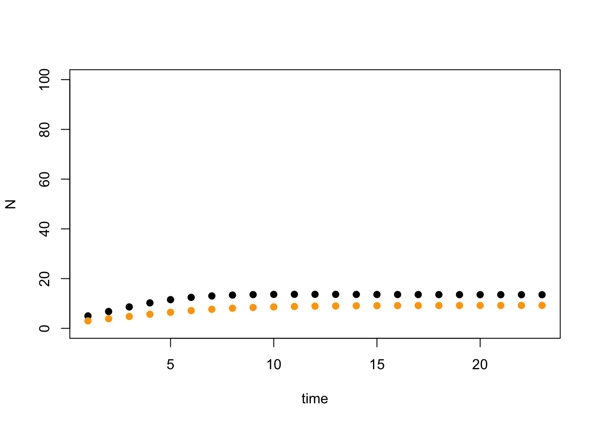

I mentioned in class that many ‘quantitative traits’ (traits with a genetic basis, determined by many genes with small effects) follow a normal distribution (as noticed by R.A. Fisher, who developed the ANOVA test in 1921 to evaluate differences in normally distributed data sampled from different populations). Let’s look closely at some trait data - measures of body mass and flipper length in a population of Gentoo penguins that inhabit 3 islands in the Palmer Archipelago (Antarctica).
A. Load the data
# library(palmerpenguins)
data("penguins")
# The data is now saved to a new variables called
# 'penguins'
head(penguins)## # A tibble: 6 × 8
## species island bill_length_mm bill_depth_mm flipper_length_mm body_mass_g
## <fct> <fct> <dbl> <dbl> <int> <int>
## 1 Adelie Torgersen 39.1 18.7 181 3750
## 2 Adelie Torgersen 39.5 17.4 186 3800
## 3 Adelie Torgersen 40.3 18 195 3250
## 4 Adelie Torgersen NA NA NA NA
## 5 Adelie Torgersen 36.7 19.3 193 3450
## 6 Adelie Torgersen 39.3 20.6 190 3650
## # ℹ 2 more variables: sex <fct>, year <int>B. Create a new variable that contains only body mass and flipper length for Gentoo penguins (and get rid of rows with NA values)
Hint: the variable penguins is a data frame. I can use
$ to index columns in the data frame, and I can use
[] to index particular positions in the data frame, like
this:
unique(penguins$species) # Check exactly how the species names are entered
new_variable <- penguins[penguins$species == "Chinstrap", ] # all columnsI can also index particular columns in the dataset this way:
# Chinstrap penguins, data frame columns 3 and 4
new_variable <- penguins[penguins$species == "Chinstrap", c(3,
4)]# solution
pen <- penguins[penguins$species == "Gentoo", c(5, 6)]
pen2 <- pen[complete.cases(pen), ]C. Create histograms for body mass and flipper length
Use the R command hist to draw those.
# solution base R
par(mfrow = c(1, 2))
hist(pen2$flipper_length_mm)
hist(pen2$body_mass_g)
D. Calculate mean and standard deviation for both traits
Use the R commands mean and sd
# solution
mean(pen2$flipper_length_mm)## [1] 217.187sd(pen2$flipper_length_mm)## [1] 6.484976mean(pen2$body_mass_g)## [1] 5076.016sd(pen2$body_mass_g)## [1] 504.1162E. Use ‘fitdistrplus’ to estimate parameters for data fit to a normal distribution
Load the library fitdistrplus, and look through the help
menu for the command fitdist. Use this command for each
trait to estimate the parameters of a normal distribution for each
dataset. The command asks you to specify what distritbuion you would
like to fit the data to. The options are:
norm, lnorm, exp, pois, cauchy, gamma, logis, nbinom, geom, beta, weibull invgamma, llogis, invweibull, pareto1, pareto.
Use norm for the normal distribution.
# solution library(fitdistrplus)
a <- fitdistrplus::fitdist(pen2$flipper_length_mm, distr = "norm")
b <- fitdistrplus::fitdist(pen2$body_mass_g, distr = "norm")F. Use ‘rnorm’ to generate random values of flipper length and body mass from the normal distribution
We have now estimated the mean and standard deviation for the Gentoo
penguin population that these individuals came from. I want you to use
these parameter values and the R command rnorm to draw
random values for penguin flipper length and body mass. Draw 3 different
values for each trait.
# solution flipper length
rnorm(3, a$estimate[1], a$estimate[2])## [1] 225.7512 211.9121 217.7963# body mass
rnorm(3, b$estimate[1], b$estimate[2])## [1] 5308.384 4380.329 5476.129G. Use ‘dnorm’ to calculate the probability of observing a flipper length of 250 and of 216 from this distribution. Which value is more likely? Please also to estimate the probability of observing a body mass of 4000 and of 5000 from that distribution. Which value is more likely?
# solution flipper length
dnorm(250, a$estimate[1], a$estimate[2])## [1] 1.533849e-07dnorm(216, a$estimate[1], a$estimate[2])## [1] 0.06073509# body mass
dnorm(4000, b$estimate[1], b$estimate[2])## [1] 7.993501e-05dnorm(5000, b$estimate[1], b$estimate[2])## [1] 0.0007855504A. Load the data
italy <- read.csv("https://raw.githubusercontent.com/jhpantel/ude-ecomod/main/data/italy.csv",
header = TRUE, row.names = 1)B. Create a new variable that contains two columns: data for
goals scored by the home team (hgoal) and scored by the
visiting team (vgoal)
# solution
goal <- italy[, c(6, 7)]C. Create histograms for home goals and visitor goals
# solution base R
par(mfrow = c(1, 2))
hist(goal$hgoal)
hist(goal$vgoal)
D. Use ‘fitdistrplus’ to estimate parameters for data fit to a Poisson distribution
Use the command fitdist, with distr="pois"
to estimate the parameters of a Poisson distribution for each variable
(hgoal, vgoal). The Poisson distribution is not the same as the Normal
distribution - we do not need the mean and standard deviation to
describe it. Instead, we need the “rate parameter” \(\lambda\). Here is more information about
the Poisson distribution (from Wikipedia):
“The Poisson distribution is a discrete probability distribution that expresses the probability of a given number of events occurring in a fixed interval of time or space if these events occur with a known constant mean rate and independently of the time since the last event. It is named after French mathematician Siméon Denis Poisson.”
“The distribution was first introduced by Siméon Denis Poisson (1781–1840) and published together with his probability theory in his work Recherches sur la probabilité des jugements en matière criminelle et en matière civile (1837). The work theorized about the number of wrongful convictions in a given country.”
“\(\lambda\) is the expected rate of occurrences”
So we are using fitdist to estimate the rate parameter
\(\lambda\) for Italian football league
goals - it represents the expected rate of scoring a goal in a
match.
# solution library(fitdistrplus)
a <- fitdistrplus::fitdist(goal$hgoal, distr = "pois")
b <- fitdistrplus::fitdist(goal$vgoal, distr = "pois")E. Use ‘rpois’ to generate random values of hgoals and vgoals from the Poisson distribution
We have now estimated the rate parameter \(\lambda\) for the Italian football goal
data. Use these parameter values and the R command rpois to
draw random values for hgoals and vgoals. Draw 3 different values for
each variable. (in other words, simulate 3 matches!!)
# solution hgoal
rpois(3, a$estimate[1])## [1] 1 2 3# vgoal
rpois(3, b$estimate[1])## [1] 2 0 1F. Use ‘dpois’ to calculate the probability of the home team scoring 2 goals in a match, and 8 goals in a match. Which value is more likely? Please also to estimate the probability of observing visitor goals of 2 and 8 from that distribution. Which value is more likely? Who is more likely to win a match, a home team or a visiting team?
# solution hgoal
dpois(2, a$estimate[1])## [1] 0.2562828dpois(8, a$estimate[1])## [1] 0.0001891203# vgoal
dpois(2, b$estimate[1])## [1] 0.1791277dpois(8, b$estimate[1])## [1] 7.594181e-06Recall at the end of exercise 4.1, we used data for Gause’s
Paramecium from the library gauseR. We used automated
commands in that library to consider data for two competing Paramecium
species and estimate parameters in a Lotka-Volterra competition model. I
repaste the code here for that exercise:
We will use data from Gause’s experiments with Paramecium, tracking competitive interactions between P. aurelia and P. caudatum.
\[ \frac{dN_1}{dt} = r_1 + \alpha_{11}N_1 + \alpha_{12}N_2 \] \[ \frac{dN_2}{dt} = r_2 + \alpha_{22}N_2 + \alpha_{21}N_1 \]
# load competition data
data("gause_1934_science_f02_03")
# subset out data from species grown in mixture
mixturedat <- gause_1934_science_f02_03[gause_1934_science_f02_03$Treatment ==
"Mixture", ]
# extract time and species data
time <- mixturedat$Day
species <- data.frame(mixturedat$Volume_Species1, mixturedat$Volume_Species2)
colnames(species) <- c("P_caudatum", "P_aurelia")
# run wrapper
gause_out <- gauseR::gause_wrapper(time = time, species = species)
# parameter estimates
gause_out$parameter_intervals## lower_sd mu upper_sd
## P_caudatum0 0.01033120 1.595268713 2.463299e+02
## P_aurelia0 0.08812049 1.631618399 3.021066e+01
## r1 0.34795149 1.259232133 4.557145e+00
## r2 0.47571115 1.026156214 2.213521e+00
## a11 -0.02061162 -0.005157869 -1.290709e-03
## a12 -0.02361279 -0.008000167 -2.710508e-03
## a21 -0.01100428 -0.001974871 -3.544183e-04
## a22 -0.01459709 -0.006851130 -3.215572e-03A. Consider a beta or uniform distribution for Lotka-Volterra interaction coefficients.
We are slowly getting to a point where we start to think about data, AND parameters in models, not as fixed values. We instead embrace uncertainty and recognize that we can’t be perfectly sure the exact value for parameters, so we think of them as drawn from a probability distribution. Let’s shift that mindset to think about interaction coefficients \(\alpha_{ii}, \alpha_{ij}\). Is there a probability distribution that can help us draw potential values for these coefficients? We will look at a uniform distribution and a beta distribution.
Read about the uniform distribution here: Wikipedia uniform distribution
Read about the beta distribution here: Wikipedia beta distribution
Use runif and rbeta to draw random values
from a uniform and a beta distribution. For the uniform distribution,
you need to specify the minimum and maximum value. Use
runif(1,min=0,max=1). For the beta distribution, you need
to specify the shape1 and shape2 parameters. A
beta distribution is scaled between 0-1. The shape1
parameter gives information about the ‘central’, expected, most likely
value. The shape2 parameters gives information about the
‘spread’ or overal variation (the likelihood of values away from the
central value). Use rbeta(1,shape1=1,shape2=50)
B. Draw 10,000 values from the uniform and the beta distribution, and plot a histogram for those, to visualize the distribution
# solution
par(mfrow = c(1, 1))
hist(runif(10000, min = 0, max = 1))
hist(rbeta(10000, shape1 = 1, shape2 = 50))
C. Use random value draws for Lotka-Volterra interaction coefficients, run simulation of LV competition dynamics using these values
First, use the uniform distribution - draw 1 random value for alpha_11, a second random value for alpha_22, a third random value for alpha_12, and a fourth random value for alpha_21. Use these, and the code you see below, to run a simulation of Lotka-Volterra dynamics for 2 competing species with these parameter values. You can use r1 = 1.7, r2 = 1.5, N1_0 = 5, N2_0 = 3. Plot the results of the simulation with your random parameter values.
I supply you with a discrete-time model for Lotka-Volterra competition here.
We use the following model:
\[ N_{1,t+1} = N_{1,t} \cdot(r_1 e^{(-\alpha_{11} N_{1,t} - \alpha_{12} N_{2,t})})\] \[ N_{2,t+1} = N_{2,t} \cdot(r_2 e^{(-\alpha_{22} N_{2,t} - \alpha_{21} N_{1,t})})\]
# Parameter values to use for simulation
r_1 <- 1.7
r_2 <- 1.5
alpha_11 <- 0.01
alpha_22 <- 0.005
alpha_12 <- 0.03
alpha_21 <- 0.007
N1_0 <- 5
N2_0 <- 3
t <- 23
# model function
disc_lv <- function(r_1, r_2, N1_0, N2_0, alpha_11, alpha_22,
alpha_12, alpha_21) {
Nt1 <- (N1_0 * r_1)/(1 + alpha_11 * N1_0 + alpha_12 * N2_0)
Nt2 <- (N2_0 * r_2)/(1 + alpha_22 * N2_0 + alpha_21 * N1_0)
return(cbind(Nt1, Nt2))
}
# Simulation of model for t time steps
N <- array(NA, dim = c(t, 2), dimnames = list(NULL, c("N1", "N2")))
N[1, 1] <- N1_0
N[1, 2] <- N2_0
for (i in 2:t) {
N[i, ] <- disc_lv(r_1, r_2, N1_0, N2_0, alpha_11, alpha_22,
alpha_12, alpha_21)
N1_0 <- N[i, 1]
N2_0 <- N[i, 2]
}Now, use the beta distribution for random draws for the alpha parameters - draw 1 random value for alpha_11, a second random value for alpha_22, a third random value for alpha_12, and a fourth random value for alpha_21.
# Parameter values to use for simulation
r_1 <- 1.7
r_2 <- 1.5
alpha_11 <- runif(1, min = 0, max = 1)
alpha_22 <- runif(1, min = 0, max = 1)
alpha_12 <- runif(1, min = 0, max = 1)
alpha_21 <- runif(1, min = 0, max = 1)
N1_0 <- 5
N2_0 <- 3
t <- 23
# model function
disc_lv <- function(r_1, r_2, N1_0, N2_0, alpha_11, alpha_22,
alpha_12, alpha_21) {
Nt1 <- (N1_0 * r_1)/(1 + alpha_11 * N1_0 + alpha_12 * N2_0)
Nt2 <- (N2_0 * r_2)/(1 + alpha_22 * N2_0 + alpha_21 * N1_0)
return(cbind(Nt1, Nt2))
}
# Simulation of model for t time steps
N <- array(NA, dim = c(t, 2), dimnames = list(NULL, c("N1", "N2")))
N[1, 1] <- N1_0
N[1, 2] <- N2_0
for (i in 2:t) {
N[i, ] <- disc_lv(r_1, r_2, N1_0, N2_0, alpha_11, alpha_22,
alpha_12, alpha_21)
N1_0 <- N[i, 1]
N2_0 <- N[i, 2]
}
# Plot simulation: ggplot
dat <- reshape2::melt(N)
ggplot2::ggplot(dat, ggplot2::aes(x = Var1, y = value, col = Var2)) +
ggplot2::geom_point()
# Plot simulation: base R
plot(N[, 1], xlab = "time", ylab = "N", pch = 19, col = "black",
ylim = c(0, 100))
points(N[, 2], pch = 19, col = "orange")
# Parameter values to use for simulation
r_1 <- 1.7
r_2 <- 1.5
alpha_11 <- rbeta(1, shape1 = 1, shape2 = 50)
alpha_22 <- rbeta(1, shape1 = 1, shape2 = 50)
alpha_12 <- rbeta(1, shape1 = 1, shape2 = 50)
alpha_21 <- rbeta(1, shape1 = 1, shape2 = 50)
N1_0 <- 5
N2_0 <- 3
t <- 23
# model function
disc_lv <- function(r_1, r_2, N1_0, N2_0, alpha_11, alpha_22,
alpha_12, alpha_21) {
Nt1 <- (N1_0 * r_1)/(1 + alpha_11 * N1_0 + alpha_12 * N2_0)
Nt2 <- (N2_0 * r_2)/(1 + alpha_22 * N2_0 + alpha_21 * N1_0)
return(cbind(Nt1, Nt2))
}
# Simulation of model for t time steps
N <- array(NA, dim = c(t, 2), dimnames = list(NULL, c("N1", "N2")))
N[1, 1] <- N1_0
N[1, 2] <- N2_0
for (i in 2:t) {
N[i, ] <- disc_lv(r_1, r_2, N1_0, N2_0, alpha_11, alpha_22,
alpha_12, alpha_21)
N1_0 <- N[i, 1]
N2_0 <- N[i, 2]
}
# Plot simulation: ggplot
dat <- reshape2::melt(N)
ggplot2::ggplot(dat, ggplot2::aes(x = Var1, y = value, col = Var2)) +
ggplot2::geom_point()
# Plot simulation: base R
plot(N[, 1], xlab = "time", ylab = "N", pch = 19, col = "black",
ylim = c(0, 100))
points(N[, 2], pch = 19, col = "orange")